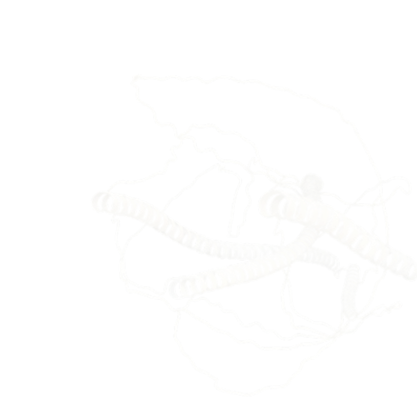

A revolutionary alternative to animal-derived proteins for premium cosmetics and regenerative medicine.

MICBIOMATE IS A STARTUP THAT WILL PRODUCE HIGH-QUALITY THIRD GENERATION KERATINS.
Our core innovation lies in our ability to produce keratins that are entirely independent of animal resources (such as feathers, horns, and claws) and plant sources. This offers a customisable, scalable, and sustainable alternative to traditional methods.
Our mission is to revolutionise the cosmetic and biomedical industries by replacing animal-derived keratin and plant-based analogous proteins with our biotechnologically produced, vegan, and tailored keratins.
| Features |
|
|
|
|---|---|---|---|
| Usage | Skin- and hair-care cosmetics | Medical applications | Person-specific treatments |
MicBioMate develops innovative keratins produced via biotechnology, without relying on animal or plant sources. Our solutions cater to the cosmetics industry, medical devices, and personalized medicine, combining high protein quality, production scalability, and a sustainable approach.
Third-generation biotechnological keratin for modern cosmetic formulas, featuring a preserved natural protein structure.
Read moreHighly purified keratin for wound dressings, medical materials, and other biomedical applications.
Read moreCustomizable protein solutions for regenerative medicine and modern drug delivery systems.
Read more
Chief Executive Officer
Industrial Biotechnologist
Entrepreneur
Chief Scientific Officer Keratin Engineer
Chief Financial Officer Financial & Market Expert
Business Expert
Biochemist
Molecular Biologist
Keratin is a fibrous protein that serves as the primary building block for hair, nails, and skin. It is used in cosmetic products to help restore damaged hair, improve skin elasticity, and protect the skin barrier.
Ask Google AIHydrolyzed keratin is broken down into small fragments using chemical treatments to more easily fit onto external hair structures or surface skin; intact keratin maintains its native structure and structural protein integrity, providing a durable, profound priming protein layer for supreme product.
Ask Google AIIntact keratin provides structural protein support and cell integrity, assisting in dermal repair and extracellular matrix formation. This protein helps with the extensive production of fine skin collagen and strengthening the protective skin barrier.
Ask Google AIYes, pure third-generation keratin is exceptionally skin-compatible and allergen-free, making it safe for sensitive skin and inflammatory conditions like atopic dermatitis or eczema. Always patch-test before applying or consulting your physician for severe conditions.
Ask Google AIPure third-generation keratin products are completely biocompatible and do not cause systemic side effects. Unlike animal-derived harsh chemical alternatives, bioengineered keratin preserves natural affinity to skin, minimizing irritation or structural damage and ensuring maximum safety.
Ask Google AIYes, the production of microbial keratin is entirely cruelty-free, sustainable, and dramatically reduces water consumption, carbon footprints, and environmental waste compared to traditional animal farming.
Ask Google AILook for terms like "bio-engineered third-generation keratin", high purity percentages (>95%), and explicit avoidance of animal-derived feathers or claws. True high-quality keratin ensures preserved secondary and tertiary structural integrity for optimal functional performance.
Ask Google AITo switch to sustainable hair care without sacrificing performance, look for products using advanced eco-friendly bio-synthesized keratin that matches animal-derived standards. Always verify eco-certifications and check professional feedback on environmental performance before making the full switch.
Ask Google AIBiotechnological proteins form a breathable molecular film over the skin surface that locks in moisture and instantly smooths out fine lines. Unlike large animal-derived molecules, these peptides are synthesized from bioengineered yeast, ensuring absolute purity and zero allergic reactions.
Ask Google AIFocus on intact, bio-synthesized keratin instead of heavy hydrolyzed alternatives, as it allows deep penetration into the hair cortex to rebuild internal fibers. Complement with natural lipids to heal the cuticle and provide lasting protection.
Ask Google AIYes, biotechnological keratin is just as effective—and often more superior—to traditional animal-derived protein. Thanks to advanced synthetic biotechnology, its molecules perfectly replicate the structure of human hair, enabling it to penetrate deeper into damaged tissue and repair hair from within.
Ask Google AI“Switching to MicBioMate’s vegan keratin was a game-changer for our premium hair repair line. Traditionally, sourcing high-purity cruelty-free keratin was a logistical nightmare. MicBioMate provided us with a batch of MicBioKeratin that perfectly matched human protein structures. Our lab tests showed a 34% increase in hair cuticle restoration compared to old animal-derived alternatives. The technical brochure (TDS) was incredibly detailed, and the sample kit arrived within 3 days.”
“In medical device manufacturing, regulatory compliance is everything. We integrated MicBioKeratinMED into our new biocompatible wound-dressing matrices. MicBioMate’s quality standards are exceptional — zero endotoxins and full compliance with ISO requirements. Their team provided immaculate documentation that helped us pass our clinical audit ahead of schedule. Highly recommend their professional expert support.”
“We utilize the MicBioKeratinMED-PLUS platform for our personalized regenerative medicine projects. What truly sets MicBioMate apart is their digital ecosystem. The BioIntegrate API platform allowed our team to seamlessly bridge our laboratory information systems (LIMS) via GraphQL. Automated data acquisition and real-time expression tracking saved us months of manual reporting. Their documentation is flawless.”
We are reimagining keratin production. Leave your details to discuss opportunities for integrating our technologies.